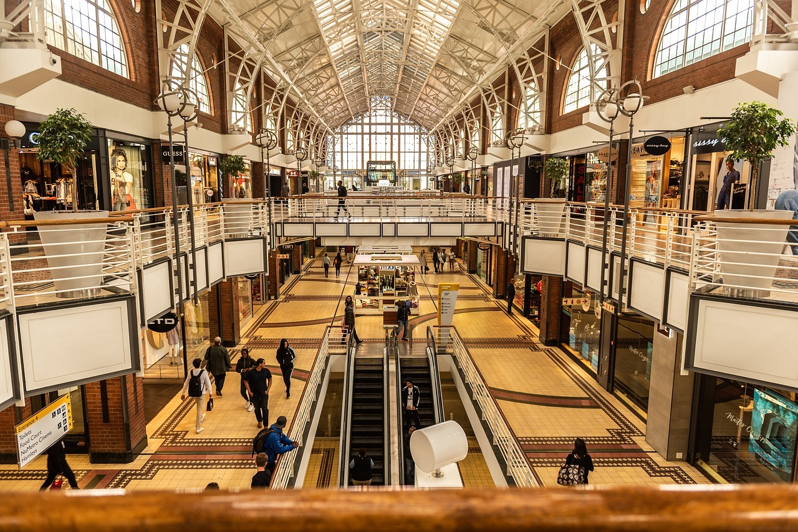
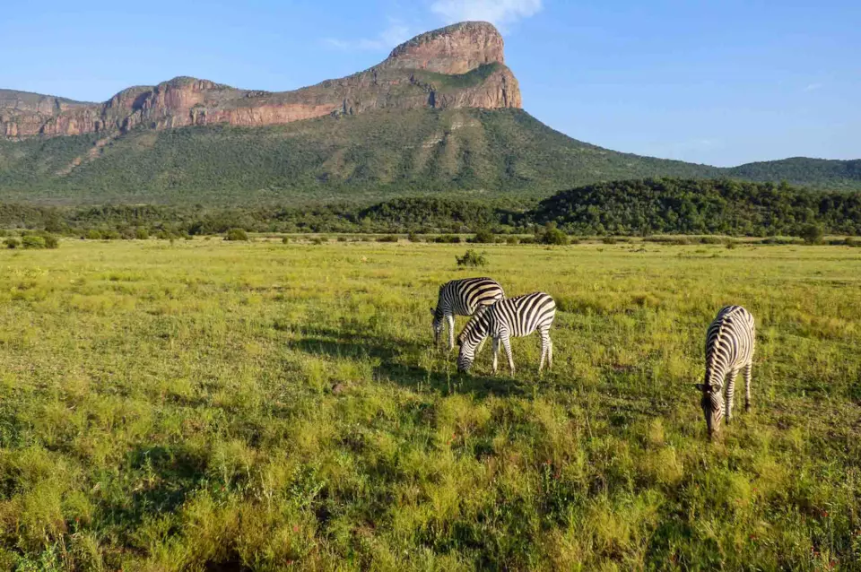

Shopping
One of the most popular shopping areas in Cape Town is, Cape Quarter.
Unique shopping options like
traditional African souvenirs,
leather articles, as well as jewelry and clothes can be found here
at the best
possible prices. South Africans do have a weak economy
and several products are cheaper to buy in
South Africa. The fruits,
furniture, pieces of bread and cereals are all cheap in South Africa.
The biggest
shopping mall in Cape Town is Canal Walk. Canal Walk is
home to over 400 clothing stores, restaurants,
major retailers,
luxury boutiques, electronic and interior decorating stores,
entertainment areas and more.
The third largest mall in the African
continent, you will definitely find what you are looking for.

Nature-Wildlife
Africa is truly a nature lover’s destination as it provides and offers very diverse
landscapes around the entire african continent. It has things from mountains to exotics
forests, deserts and even savannas. There are over 800 hundred bird species in various
places around the South African continent. South Africa is a perfect place for bird watching
and sometimes you can even find some of the big five, lions, elephants, cape buffalo,
leopards and also rhinos. Some places you can find penguins on some of the beaches.

Activites
Some of the activities you can experience in south africa are skydiving, bungee jumping, shark diving and
if you want to do some more calm activities their famous museum or bird watching is a perfect fit. Because
of the great mountains, hiking is the perfect activity to get a fantastic view over the great country. South Africa
has one of the ost famous places to bungee jump at 710 feet.